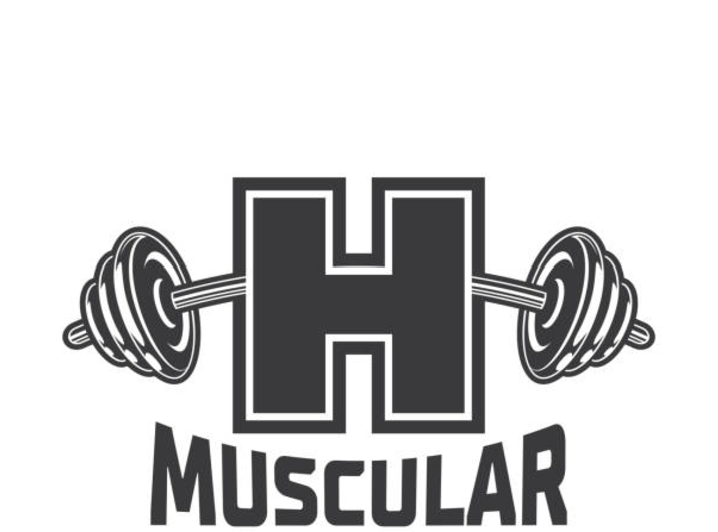

Kako Brinuti o Mentalnom ZdravljuMentalno zdravlje je jednako važno kao i fizičko. Pročitajte savjete i strategije za poboljšanje mentalnog zdravlja.
|
|  |
Zdravlje i Fitnes |
Kako Brinuti o Mentalnom ZdravljuMentalno zdravlje je jednako važno kao i fizičko. Pročitajte savjete i strategije za poboljšanje mentalnog zdravlja.
|